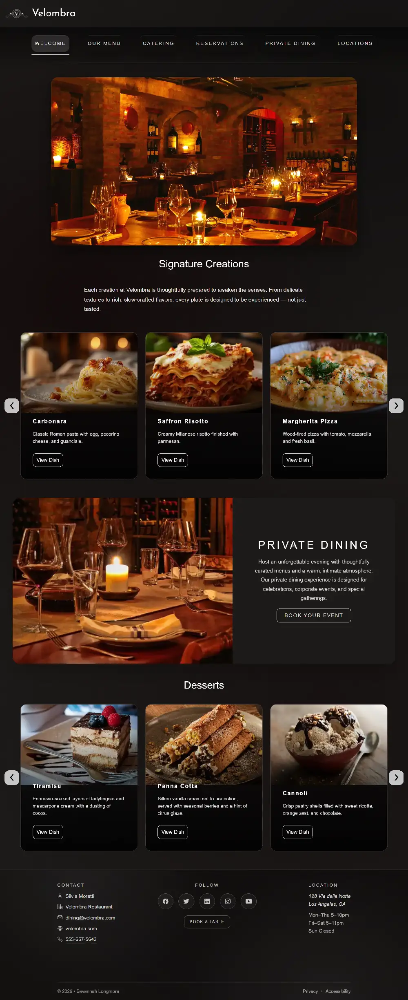
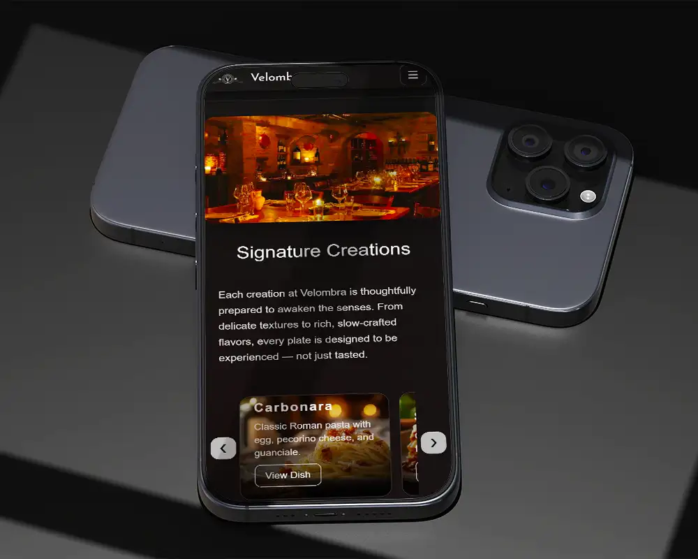
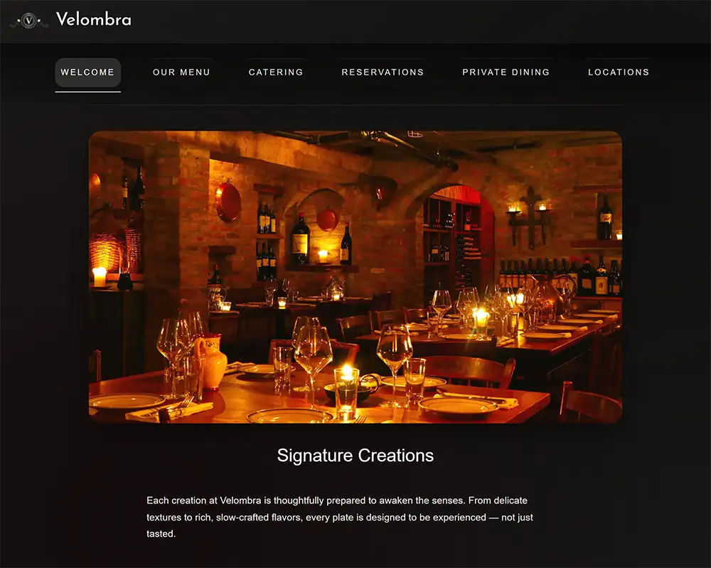

Overview
This project focused on understanding how design translates into code. I designed and built the homepage of a fictional diner website using HTML, CSS, and JavaScript, with the goal of creating a responsive and visually engaging experience across both desktop and mobile devices.
My role included designing the layout, developing interactive components, implementing mobile navigation, and optimizing website performance.
My Role
UX/UI Designer & Front-End Developer
Tools
HTML, CSS, JavaScript, VS Code
Focus
Responsive layout, interactivity, performance
The Challenge
The primary challenge in this project was designing a layout that worked consistently across desktop, tablet, and mobile screen sizes. Layouts that looked balanced on large screens often felt awkward or crowded on smaller devices.
The split-screen layout in particular became difficult to maintain across breakpoints. What worked visually on desktop did not translate well to mobile, so I needed to rethink how content should adapt depending on screen size.
Designing in Code
Instead of creating static mockups beforehand, I designed the interface directly in code. This allowed me to immediately test layout decisions and see how they behaved across different screen sizes.
Design and development evolved together throughout the process. As I built each section, I continuously refined spacing, layout structure, and interactions to improve clarity and usability.

Responsive Layout Decisions
The most difficult part of development was ensuring the layout remained visually balanced across desktop, tablet, and mobile views. The medium breakpoint was particularly challenging because it required deciding whether the layout should behave more like the desktop or mobile version.
In the end, I chose to mirror the mobile layout at medium sizes because the stacked structure felt clearer and easier to understand for users.
Carousel Interaction
One feature I am particularly proud of is the carousel component. On desktop, the carousel displays three cards at once to create a sense of depth and variety. On mobile devices, the carousel adapts to display one card at a time for better readability.
The carousel also includes looping functionality so that when users reach the end of the content, it seamlessly returns to the beginning. This prevents the interaction from feeling abrupt or broken.
Performance Optimization
Large images can significantly slow down a website, so I optimized all images before adding them to the project. Images were resized to approximately 600px and converted to WebP format to reduce file size while maintaining visual quality.
This ensured the site would load quickly and provide a smoother experience for users across different devices.
- Compressed images → reduced total size significantly
- Mobile-first CSS → faster load on phones
- Minimal JavaScript → carousel and nav work smoothly
Key Design Decisions
Reduced Visual Clutter
I considered adding a food gallery, but removed the idea because it made the page feel too busy and disrupted the flow.
Adapted Split Layouts
Split-screen sections worked well on desktop, but felt uncomfortable on mobile, so I changed them to stacked layouts on smaller screens.
Adjusted Carousel Behavior
The carousel displayed three cards on desktop for a richer browsing experience, but switched to one card on mobile for clarity and readability.
What I Learned
Design Changes Across Screens
A layout that works on desktop will not always work on mobile. Responsive design often requires rethinking the structure, not just resizing it.
Code Shapes Design
Designing directly in code helped me see how layout, spacing, and interaction decisions affected the real user experience.
Less Can Be Better
Not every idea improves a design. If a feature adds clutter or overwhelms the user, it is better to simplify.
Try It Live – Mobile Experience
Interact with the real site: click buttons, open the menu, scroll — all inside this preview.
Loading demo...
Interactive demo (may not work in all browsers — use the link above if needed)